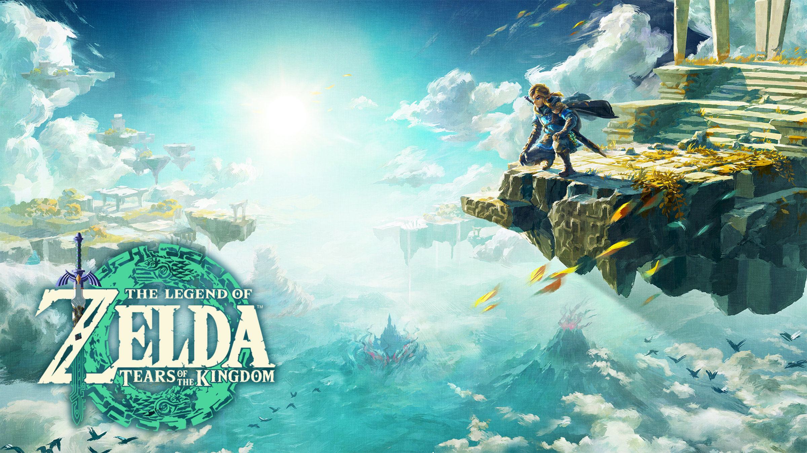
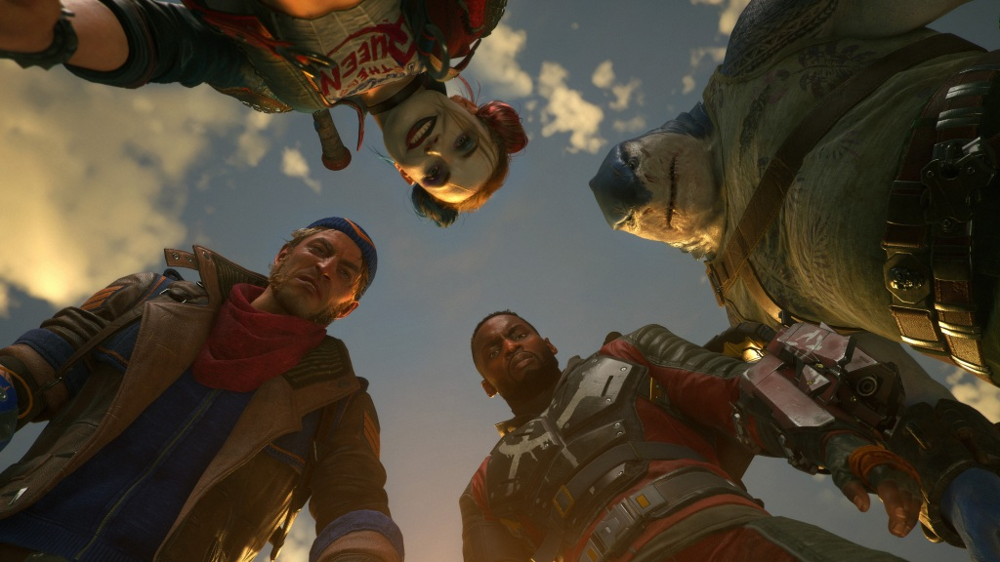

UPCOMING NEWS:
Let’s face it, 2022 has been a bit of a bummer year for video games.
Thanks to the ongoing impacts of the coronavirus pandemic,
many of the most anticipated games of the year wound up being delayed, pushed into 2023 as developers battled with complex workplace situations, lockdowns, and other challenges.
While that’s meant a relatively quiet year for gaming, it’s also fluffed up the feathers of 2023 – a year which is now absolutely stacked with blockbuster releases.
For a taster of what’s to come, here’s every major game currently set to launch in 2023:
Forspoken:
Image: Luminous Productions / Square Enix
Release Date: 24 January 2023
Platform(s): PlayStation 5, PC
Forspoken is a fresh new IP from Luminous Productions and Square Enix that looks to be vying for blockbuster success. In this unique fantasy video game, you play as Frey, a young woman from modern New York who is transported into a magical fantasy realm, where she gains immense and awesome powers. Early looks at this game have shown off fluid traversal and a number of flashy attacks – but it’s the story here that shines through. While Forspoken has only really been seen in snippets and glimpses so far, it’s a game that feels very inspired and original. Video games have the power to tell extremely impactful stories, and there’s hope Frey’s will be as magical and beautiful as it looks.
Dead Island 2:
Image: Deep Silver
Release Date: 3 February 2023
Platform(s): PlayStation 4, PlayStation 5, Xbox One, Xbox Series X/S, Windows PC
Dead Island 2 has shockingly risen from the dead, with a new trailer at Gamescom 2022 confirming it will finally launch for PC and consoles in February 2023. The game has been in development for around a decade, but it’s now heading towards the light, and will kick off a major calendar year for gaming. In this adventure, you’re tasked with beating back infected zombies, surviving with a small band of immune humans, and winning back the entire city of Los Angeles through bloody and desperate fights. You’ll have a range of weapons at your disposal to complete your mission, including a deadly katana, glass bottles, and a shotgun.
Alan Wake 2:
Image: Remedy Entertainment
Release Date: 2023
Platform(s): PlayStation 5, Xbox Series X/S, Windows PC
Alan Wake 2, the long, long-gestating sequel to 2010’s Alan Wake has locked in a release date for 2023. While this may slip, given the reported scope of the sequel, there’s still hope it will be on track for its planned launch. The team at Remedy has a phenomenal library of games behind them – including titles like Max Payne and Control – so we’re expecting big things from this sequel. So far, we know that the upcoming game will take more inspiration from the survival horror genre than the original, with plenty of tricks and scares up its sleeve. With the horror elements dialled up to eleven, expect Alan Wake 2 to be a massive, spooky surprise.
Wild Hearts:
Image: EA / Koei Tecmo
Release Date: 17 February 2023
Platform(s): PlayStation 5, Xbox Series X/S, Windows PC
Wild Hearts is a new monster hunting adventure game that aims to revolutionise the entire action-adventure genre with bigger monster battles, new tools for traps and fighting, and plenty of dazzling locales to conquer. This game will send players on a wild journey through the land of Azuma, a fantasy realm inspired by feudal Japan, with each corner of this world plagued by a cavalcade of ‘Kemono’ monsters. While the gameplay will seem very familiar to fans of Capcom’s Monster Hunter series, Wild Hearts looks packed to the brim with new ideas that should spice up your journey, and keep you hooked on the next quest in the distance.
Hogwarts Legacy:
Image: Warner Bros. Games
Release Date: 10 February 2023
Platform(s): PlayStation 4, PlayStation 5, Xbox One, Xbox Series X/S, Windows PC, Nintendo Switch
Hogwarts Legacy is the upcoming Wizarding World simulator that many have desired for years – and while it may be coming too late for long-time fans of the franchise, who are slowly coming to reckon with the harmful, derogatory comments Harry Potter author J.K. Rowling has been spouting about trans people for years, it’s fair to say there are those still looking forward to this magical, creature-filled adventure. With trailers showing off gorgeous magical lands to explore and beings to befriend, it appears this title will incorporate the very best parts of the Harry Potter franchise for a whole new story set in the once-beloved world. While it comes with baggage, Hogwarts Legacy could still be a magical time.
Skull and Bones:
Image: Ubisoft
Release Date: 9 March 2023
Platform (s): PlayStation 5, Xbox Series X/S, Windows PC
Skull and Bones, the long-awaited piracy simulator, will finally launching in March 2023, amidst a stacked Q1 cohort. While that is cause for some concern, this seafaring journey is looking to thrive on its own merits. In your Skull and Bones journey, you’ll attempt to conquer the high seas as a wily pirate, gathering everything you can to build up your ship, crew, and treasures.
The Legend of Zelda: Tears of the Kingdom

Image: Nintendo
Release Date: 12 May 2023
Platform(s): Nintendo Switch
The Legend of Zelda: Tears of the Kingdom is officially confirmed to launch in May 2023. This major sequel will see Link return to the land of Hyrule, and also explore far and low with brand new puzzles, sky-faring gameplay, and plenty of intrigue in store. We don’t know much about the game just yet, but new looks at the action have revealed a sweeping adventure that feels ripe for exploration. If you fell in love with the gorgeous lands of Breath of the Wild, expect more of the same here – but on a much grander scale.
Redfall:
Image: Arkane Studios
Release Date: Q1-Q2 2023
Platform(s): Xbox Series X/S, Windows PC
Redfall, the upcoming open-world, co-op FPS game from studio Arkane, was originally set to launch in 2022, and was later pushed back to the first half of 2023. The long wait looks like it’ll be worth it – early gameplay trailers have shown off a hybrid stealth-action shooter with plenty of gnarly tricks and twists. In this game, you’ll embody one of four heroes, each of which can use magical abilities or tools to take down evil vampire forces. It’s a little bit Darkwatch, and a little bit Dracula, making it perfect for anyone who loves the horror-western genre, or just a bit of bloody good adventuring. Bring your garlic and keep your eyes peeled for a firm release date for Redfall.
Suicide Squad: Kill the Justice League

Image: Warner Bros. Interactive Entertainment
Release Date: Early 2023
Platform(s): PlayStation 5, Xbox Series X/S, Windows PC
Suicide Squad: Kill the Justice League was delayed in very early 2022, and news of the title has since gone quiet – but apparently it’s still on track for its planned early 2023 launch. This adventure game is described as an open world, narrative-based game where you play as the various members of the Suicide Squad (Harley Quinn, King Shark, Deadshot, Captain Boomerang) on a mission to save the planet from the mind-controlling villain, Brainiac. As he’s controlling members of the Justice League, you’ll need to hunt down characters like The Flash, Wonder Woman and Superman, all of whom are being possessed. There’ll be a robust co-op mode in this game, but it can also be played completely solo, with players changing character at will. No matter which anti-hero you choose, the game should be a literal blast.
Diablo IV:
Image: Activision Blizzard
Release Date: 2023
Platform(s): PlayStation 4, PlayStation 5, Xbox One, Xbox Series X/S, Windows PC
The long-anticipated Diablo IV was announced way back in 2019, but it finally looks set to launch in 2023. Early looks at the game have shown off snazzy new classes, gloomy villains, and plenty of skeletons – all of which you can expect when the game finally launches. A leak in August 2022 indicates Diablo IV will get a major showcase at the 2022 Game Awards ceremony, so keep an eye out for more news as we head towards the end of the year. It won’t be long before we see more of this gorgeous, grungy romp.
Final Fantasy XVI:

Image: Square Enix
Release Date: 2023
Platform(s): PlayStation 5
Final Fantasy XVI, the latest mainline game in the long-running franchise, is set for release in 2023, although there’s still plenty of mystery surrounding the game. So far, we know it will take place in a world inspired by medieval Europe, with multiple army actions maintaining peace in the region thanks to special gems known as Mothercrystals. You play as an Archduke of Rosaria who must set off on a wild and magical quest after the dark god Ifrit causes chaos in the land. It appears these gods, known as Eikons, will play a large part in this story as well as in combat, with early looks at the game featuring over-the-top, monster-on-monster combat.
Star Wars Jedi: Survivor

Image: EA
Release Date: 2023
Platform(s): PlayStation 5, Xbox Series X/S, Windows PC
Star Wars Jedi: Fallen Order is set to receive a major sequel in 2023, with the adventure once again starring young Jedi Cal Kestis in the title role. This game will follow on from the events of the original story, and will likely see Kestis attempting to survive a galaxy turned hostile in the wake of Order 66, which commanded the killing of all Jedi warriors. An early trailer for the game has shown off mysterious new characters and plenty of intrigue. It’s likely we’ll see much more in the coming months. Fallen Order was a major success on all fronts, and proved that single player Star Wars games have a major future at publisher EA.
Marvel’s Spider-Man 2:
Image: Insomniac Games
Release Date: 2023
Platform(s): PlayStation 5
Much like other nebulous ‘2023’ games, there are currently few details about the release of Marvel’s Spider-Man 2, the extremely anticipated sequel to the original 2018 hit game. Various teasers and screenshots have shared more about the story – confirming that it will feature Miles Morales and Peter Parker as Spider-Man, and that Venom will play a massive part in the game – but we still don’t know much about the plot, or what to expect. Whatever’s on the way will likely be just as grand and exciting as the original adventure, which eclipsed every expectation placed on it and almost single-handedly brought back the ‘comic book video game’ genre. There’s no doubt Insomniac Games is cooking up something Spectacular, Amazing and Superior. We’ll just have to stay patient to see what’s in store.